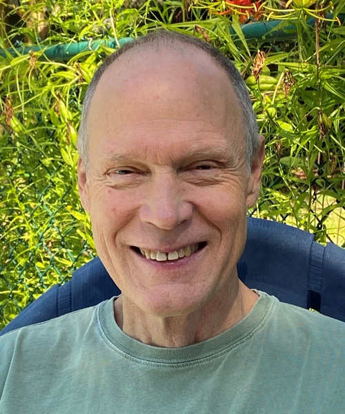

Teachers  Paul LinnPaul Linn began dharma studies and meditation in 1977. He has taught throughout the US mainland and Hawaiian islands since 1987 and co-founded the Gainesville Vipassana Society with Steve Bean in 1997. Paul's extensive study and practice of psychotherapy combined with dharma teachings help inform the nature of Awakening as inherent in living itself. With respect to the spiritual traditions that meditation resides within, he aims to bring a freshness and wonder forth that reminds the heart to rest in itself and realize what is unlimited. Steve BeanSteve Bean began his spiritual practice in the Theravada Buddhist tradition in the early 70s, and these teachings remain as a foundation for him today. Later he continued study and practice in yogic traditions, Tibetan Buddhism, as well the shamanic traditions of the South America. In 1997 Paul Linn and Steve founded the Gainesville Vipassana Society. The direct experience of simply being and the wonder of the profound have inspired him to share the potential of realizing one’s true nature. This is the birthright of every human being. |